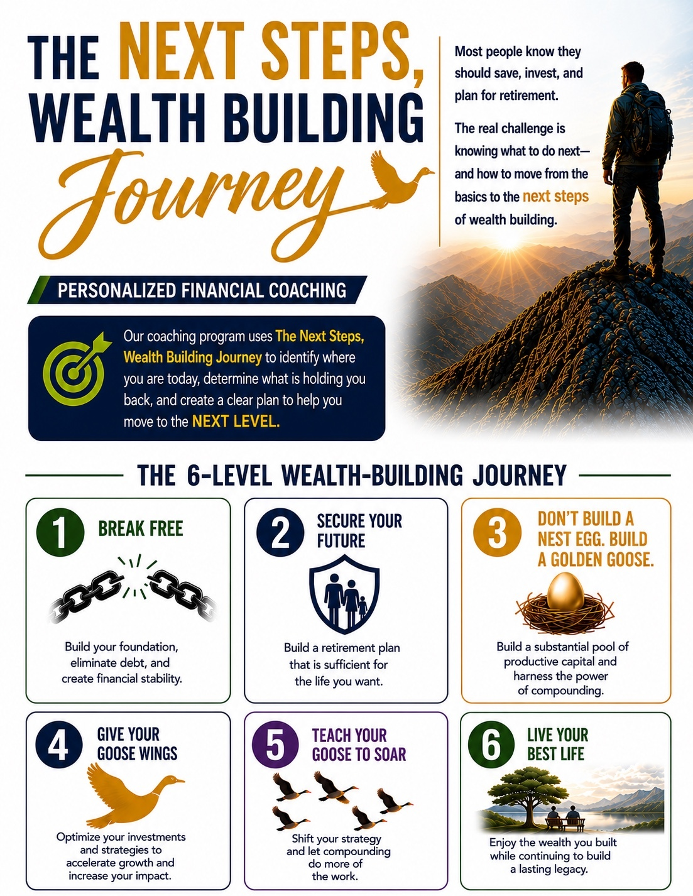

A practical roadmap from financial freedom to a lasting legacy.

The Next Steps Wealth-Building Journey is designed to help people identify where they are today, understand the next level, and create a clear path forward.
The six-level framework provides a visual structure for conversations about financial progress, wealth building, and long-term goals.
Explore the Framework